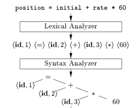

Let’s create a parser for noam, for now we will use tools that create parsers for us, maybe later we’ll focus on implementing one from scratch, however our aim for now is to understand how compilers work, and creating one that works. We’ll modify our lexer which is basically a lisp thunk that is modified from before to return TOKEN and value of a lexeme when used by the parser that we’re going to make.
In the lexical analysis phase, we used the power of DFAs ( Regular Expressions or Regular Grammars) to check if our input file,
is indeed made up of words that are recognized in our language as valid. Take English for example, if we are given the input stream
Here Is An English Sente&#%nc@e, we are able to recognize that Here, Is, An and English are all
valid English words, but Sente&#%nc@e is not. Regular Expressions let us do this, but they fall short when it comes to
finding out whether a given sentence is grammatically correct or not,
let’s say we have Another in English Sentence Here is as input,
RegExp will tell us that this sentence is made up of valid English words
But it can’t really tell if it has valid English grammatical structure.
This is also called Syntactical Analysis.
Here is where the need to use context free grammars becomes apparent. The same principle is present in Compiler Design. We want to make sure the input program is syntactically correct.
We will use cl-yacc to create the parser and print out how the input program is derived from the grammar.
Language Specification is basically an instruction set that shows us how different sentential forms can be derived in our language. A sentential form is basically a configuration of some sentence in our language before or after it is derived. for example if our grammar is like this :
expression -> expression + expression
expression -> 2
expression + 2, 2+2, expression + expression, 2 + expression would all be sentential forms.
a sentential form that can derive nothing, is called a sentence.
2+2 is a sentence in this example.
The Specification of most programming languages are in backaus-naur-form(BNF) which is just another way of representing Context Free Grammars. here how the noam specification looks like in extended bnf ( ebnf ) for now:
program = { automaton_declaration | verification_declaration };
automaton_declaration = "Automaton" identifier "{"
state_declaration
start_state
accept_states
alphabet_declaration
transition_declaration
"}";
state_declaration = "states" "{" {state, ","} state "}", ";";
start_state = "start" state, ";";
accept_states = "accept" "{" { state, "," } state "}", ";";
state = identifier;
alphabet_declaration = "inputset" "{" {string, ","}, string "}", ";";
transition_declaration = dfa_transition;
dfa_transition = "transition" state, ":" { transition_rule }
transition_rule = "on" string,"," "goto" state, ";";
verification_declaration = "Verify" identifier "{"
property_list
"}";
property_list = { property, ";"};
property = reachable | acceptance | determinism | emptiness | equivalence;
reachable = "canreach" "{" { state, "," } state "}";
acceptance = "accepts" "{" { string,"," } string "}";
determinism = "deterministic";
emptiness = "isempty";
equivalence = "equal" "{" { identifier,"," } identifier "}" ;
termination = "terminates" "{" { string, "," } string "}";
identifier = letter , { letter | digit | "_" } ;
letter = "A" | "B" | "C" | "D" | "E" | "F" | "G"
| "H" | "I" | "J" | "K" | "L" | "M" | "N"
| "O" | "P" | "Q" | "R" | "S" | "T" | "U"
| "V" | "W" | "X" | "Y" | "Z" | "a" | "b"
| "c" | "d" | "e" | "f" | "g" | "h" | "i"
| "j" | "k" | "l" | "m" | "n" | "o" | "p"
| "q" | "r" | "s" | "t" | "u" | "v" | "w"
| "x" | "y" | "z";
digit = "0" | "1" | "2" | "3" | "4" | "5" | "6" | "7" | "8" | "9" ;
symbol = "[" | "]" | "{" | "}" | "(" | ")" | "<" | ">"
| "'" | '"' | "=" | "|" | "." | "," | ";" | "-"
| "+" | "*" | "?" | "\n" | "\t" | "\r" | "\f" | "\b" ;
string = { character };
character = letter | digit | symbol | "_" | " " ;
Let’s formally define CFGs. Let’s say G is a context free language. Then G is a 4-tuple (V,T,P,S) where
We start with the start variable S, Each time a nonterminal is chosen and the production rule that has this nonterminal as it’s left hand ( head ) is used to derive other sentential forms.
Terminals can never be the head of some production meaning they cannot derive anything. A sentence is composed of only terminals.
The Start Variable of the noam specification would be the program variable and the
production of which program is the head, would be program -> automaton_declaration | verification_declaration
we want to some how analyze our input file and find out which of these production rules are used to derive that sentence.
Utilizing the power of Context Free Grammars, we can find a lot about the structure of a given input stream, given the grammar specification.

A parser is a program, that takes tokens from lexer, and tries to make sense of them syntactically while looking at a pre-defined grammar ( tries to create syntax trees ). A parser is effectively a really big state machine that decides what part of the input ( sentential form ), corresponds to what part of the grammar productions. There are different type of parsers, Top-Down parsers, Bottom-up Parsers and more. For the sake of this blog post, we’ll talk about bottom-up parsing since that is the method mostly used to create parsers for programming languages. Most parser generators also use bottom-up parsing techniques to create parsers.
Wizard as Parser, Creating A parse tree for Ex Arboribus Cognitio
From Trees, Knowledge
A bottom-up parser, tries to start from the sentence given as input and build it’s way up to the start variable, by doing two things :
It Either:
It is basically a really big state machine that decides whether to shift/reduce when given a token.
The class of Context Free Languages that can be parsed by bottom-up parsers are called LR(k) languages. It stands for Left-to-Right Rightmost derivation in reverse, and k is the number of character lookaheads that is allowed.
In some cases some conflicts can happen ( when the parser doesn’t know if it should shift or reduce ) We can get by easily by looking at a special type of languages that parsed with LALR(1) parsers.
For the most part, conflicts can be avoided in the parsing table designed for these languages.
That may be the reason why most parser generators like yacc/bison create LALR(1) parsers.
In this post, we’ll create a parser for noam that effectively parses the noam input file and prints the reductions performed by the parser in order of them taking effect.
Let’s first Modify the lexer we had from earlier to return a VALUE and lexeme when finding a token.
lexer.lisp:
(ql:quickload '(:cl-lex))
(defpackage :noam-lexer
(:use :cl :cl-lex)
(:export
#:noam-lexer
:AUTOMATON_KW :STATES_KW :START_KW :ACCEPT_KW :VERIFY_KW
:INPUTSET_KW :TRANSITION_KW :ON_KW :GOTO_KW :CANREACH_KW
:ACCEPTS_KW :DETERMINISTIC_KW :ISEMPTY_KW :EQUAL_KW :TERMINATES_KW
:SEMICOLON :LBRACE :RBRACE :COMMA :COLON
:IDENTIFIER :STRING))
(in-package :noam-lexer)
;;Noam-lexer
(define-string-lexer noam-lexer
;; Ignore \t and newlines.
("[\\t\\n]+" nil)
;; Reserved keywords.
("accepts" (return (values 'ACCEPTS_KW $@)))
("Automaton" (return (values 'AUTOMATON_KW $@)))
("states" (return (values 'STATES_KW $@)))
("start" (return (values 'START_KW $@)))
("accept" (return (values 'ACCEPT_KW $@)))
("Verify" (return (values 'VERIFY_KW $@)))
("inputset" (return (values 'INPUTSET_KW $@)))
("transition" (return (values 'TRANSITION_KW $@)))
("on" (return (values 'ON_KW $@)))
("goto" (return (values 'GOTO_KW $@)))
("canreach" (return (values 'CANREACH_KW $@)))
("deterministic" (return (values 'DETERMINISTIC_KW $@)))
("isempty" (return (values 'ISEMPTY_KW $@)))
("terminates" (return (values 'TERMINATES_KW $@)))
("equal" (return (values 'EQUAL_KW $@)))
(";" (return (values 'SEMICOLON $@)))
("," (return (values 'COMMA $@)))
("{" (return (values 'LBRACE $@)))
("}" (return (values 'RBRACE $@)))
(":" (return (values 'COLON $@)))
;; STRING
("\\\"[a-zA-Z0-9_ ]*\\\""
(return (values 'STRING $@)))
;; IDENTIFIER
("[a-zA-Z][a-zA-Z0-9_]*"
(return (values 'IDENTIFIER $@)))
)
define-parser macro. This macro generates a parser and binds it to the special variable name.
First we need to specify the start-symbol and terminals:
(define-parser *noam-print-reductions*
(:start-symbol program)
(:terminals (AUTOMATON_KW STATES_KW START_KW ACCEPT_KW VERIFY_KW
INPUTSET_KW TRANSITION_KW ON_KW GOTO_KW
CANREACH_KW ACCEPTS_KW DETERMINISTIC_KW ISEMPTY_KW EQUAL_KW TERMINATES_KW
SEMICOLON LBRACE RBRACE COMMA COLON
IDENTIFIER STRING))
state_declaration -> states { ID_LIST }; in cl-yacc:
(state-declaration
(STATES_KW LBRACE identifier-list RBRACE SEMICOLON
(lambda (states-kw lbrace ids rbrace semicolon)
(format t "state_declaration -> STATES_KW LBRACE identifier_list RBRACE SEMICOLON~%"))))
(define-parser *noam-print-reductions*
(:start-symbol program)
(:terminals (AUTOMATON_KW STATES_KW START_KW ACCEPT_KW VERIFY_KW
INPUTSET_KW TRANSITION_KW ON_KW GOTO_KW
CANREACH_KW ACCEPTS_KW DETERMINISTIC_KW ISEMPTY_KW EQUAL_KW TERMINATES_KW
SEMICOLON LBRACE RBRACE COMMA COLON
IDENTIFIER STRING))
(program
(declist (lambda (token)
(format t "program -> declist~%")
)))
(dec
(automaton-declaration (lambda (token)
(format t "dec -> automaton_declaration~%")
))
(verification-declaration (lambda (token)
(format t "dec -> verification_declaration~%")
)))
(declist
(dec declist (lambda (tx ty)
(format t "declist -> dec declist~%")
))
((lambda ()
(format t "declist -> epsilon~%")
))
)
(automaton-declaration
(AUTOMATON_KW IDENTIFIER LBRACE
state-declaration
start-state
accept-states
alphabet-declaration
transition-declaration-list
RBRACE
(lambda (automaton-kw id lbrace state-dec start accept alphabet trans rbrace)
(format t "automaton_declaration -> AUTOMATON_KW IDENTIFIER LBRACE state_declaration start_state accept_states alphabet_declaration transition_declaration_list RBRACE~%"))))
(state-declaration
(STATES_KW LBRACE identifier-list RBRACE SEMICOLON
(lambda (states-kw lbrace ids rbrace semicolon)
(format t "state_declaration -> STATES_KW LBRACE identifier_list RBRACE SEMICOLON~%"))))
(start-state
(START_KW IDENTIFIER SEMICOLON
(lambda (start-kw id semicolon)
(format t "start_state -> START_KW IDENTIFIER SEMICOLON~%"))))
(accept-states
(ACCEPT_KW LBRACE identifier-list RBRACE SEMICOLON
(lambda (accept-kw lbrace ids rbrace semicolon)
(format t "accept_states -> ACCEPT_KW LBRACE identifier_list RBRACE SEMICOLON~%"))))
(alphabet-declaration
(INPUTSET_KW LBRACE string-list RBRACE SEMICOLON
(lambda (inputset-kw lbrace strings rbrace semicolon)
(format t "alphabet_declaration -> INPUTSET_KW LBRACE string_list RBRACE SEMICOLON~%"))))
(transition-declaration-list
(transition-declaration transition-declaration-list
(lambda (trans-dec trans-list)
(format t "transition_declaration_list -> transition_declaration transition_declaration_list~%")))
(transition-declaration
(lambda (trans-dec)
(format t "transition_declaration_list -> transition_declaration~%"))))
(transition-declaration
(dfa-transition
(lambda (dfa-trans)
(format t "transition_declaration -> dfa_transition~%"))))
(dfa-transition
(TRANSITION_KW IDENTIFIER COLON transition-rule-list
(lambda (trans-kw id colon rules)
(format t "dfa_transition -> TRANSITION_KW IDENTIFIER COLON transition_rule_list~%"))))
(transition-rule
(ON_KW STRING COMMA GOTO_KW IDENTIFIER SEMICOLON
(lambda (on-kw str comma goto-kw id semicolon)
(format t "transition_rule -> ON_KW STRING COMMA GOTO_KW IDENTIFIER SEMICOLON~%"))))
(verification-declaration
(VERIFY_KW IDENTIFIER LBRACE property-list RBRACE
(lambda (verify-kw id lbrace props rbrace)
(format t "verification_declaration -> VERIFY_KW IDENTIFIER LBRACE property_list RBRACE~%"))))
(property-list
(property SEMICOLON property-list
(lambda (prop semicolon prop-list)
(format t "property_list -> property SEMICOLON property_list~%")))
(property SEMICOLON ;
(lambda (prop semicolon)
(format t "property_list -> property SEMICOLON~%")))
(() ;
(lambda ()
(format t "property_list -> epsilon~%"))))
(property
(reachable
(lambda (reach)
(format t "property -> reachable~%")))
(acceptance
(lambda (accept)
(format t "property -> acceptance~%")))
(determinism
(lambda (det)
(format t "property -> determinism~%")))
(emptiness
(lambda (empty)
(format t "property -> emptiness~%")))
(equivalence
(lambda (equiv)
(format t "property -> equivalence~%")))
(termination
(lambda (term)
(format t "property -> termination~%"))))
(reachable
(CANREACH_KW LBRACE identifier-list RBRACE
(lambda (canreach-kw lbrace ids rbrace)
(format t "reachable -> CANREACH_KW LBRACE identifier_list RBRACE~%"))))
(acceptance
(ACCEPTS_KW LBRACE string-list RBRACE
(lambda (accepts-kw lbrace strings rbrace)
(format t "acceptance -> ACCEPTS_KW LBRACE string_list RBRACE~%"))))
(determinism
(DETERMINISTIC_KW
(lambda (det-kw)
(format t "determinism -> DETERMINISTIC_KW~%"))))
(emptiness
(ISEMPTY_KW
(lambda (empty-kw)
(format t "emptiness -> ISEMPTY_KW~%"))))
(equivalence
(EQUAL_KW LBRACE identifier-list RBRACE
(lambda (equal-kw lbrace ids rbrace)
(format t "equivalence -> EQUAL_KW LBRACE identifier_list RBRACE~%"))))
(termination
(TERMINATES_KW LBRACE string-list RBRACE
(lambda (terminates-kw lbrace strings rbrace)
(format t "termination -> TERMINATES_KW LBRACE string_list RBRACE~%"))))
(string-list
(STRING COMMA string-list
(lambda (str comma str-list)
(format t "string_list -> STRING COMMA string_list~%")))
(STRING
(lambda (str)
(format t "string_list -> STRING~%"))))
(identifier-list
(IDENTIFIER COMMA identifier-list
(lambda (id comma id-list)
(format t "identifier_list -> IDENTIFIER COMMA identifier_list~%")))
(IDENTIFIER
(lambda (id)
(format t "identifier_list -> IDENTIFIER~%"))))
(transition-rule-list
(transition-rule transition-rule-list
(lambda (rule rule-list)
(format t "transition_rule_list -> transition_rule transition_rule_list~%")))
(transition-rule
(lambda (rule)
(format t "transition_rule_list -> transition_rule~%"))))
)
(defun parse-noam-file (filename)
"Parse a Noam file and write reductions to reductions.txt"
(with-open-file (output-stream "reductions.txt"
:direction :output
:if-exists :supersede
:if-does-not-exist :create)
;; Temporarily bind *standard-output* to our file stream
(let ((*standard-output* output-stream))
(with-open-file (input-stream filename :direction :input)
(let* ((file-contents (make-string (file-length input-stream)))
(read-chars (read-sequence file-contents input-stream)))
(parse-with-lexer
(noam-lexer (subseq file-contents 0 read-chars))
*noam-print-reductions*))))))
Verify A2 {
terminates {"0011"};
equal {A1};
}
reductions.txt file :
string_list -> STRING
termination -> TERMINATES_KW LBRACE string_list RBRACE
property -> termination
identifier_list -> IDENTIFIER
equivalence -> EQUAL_KW LBRACE identifier_list RBRACE
property -> equivalence
property_list -> property SEMICOLON
property_list -> property SEMICOLON property_list
verification_declaration -> VERIFY_KW IDENTIFIER LBRACE property_list RBRACE
dec -> verification_declaration
declist -> epsilon
declist -> dec declist
program -> declist
"0011") is Identified and reduced to string_list.
Then the termination keyword (terminates {"0011"};) is reduced to termination nonterminal.
Then the termination nonterminal is reduced to property.
And So On..
Until we get declist reduced to program, which is our start symbol.
Therefore the input has been parsed successfully.